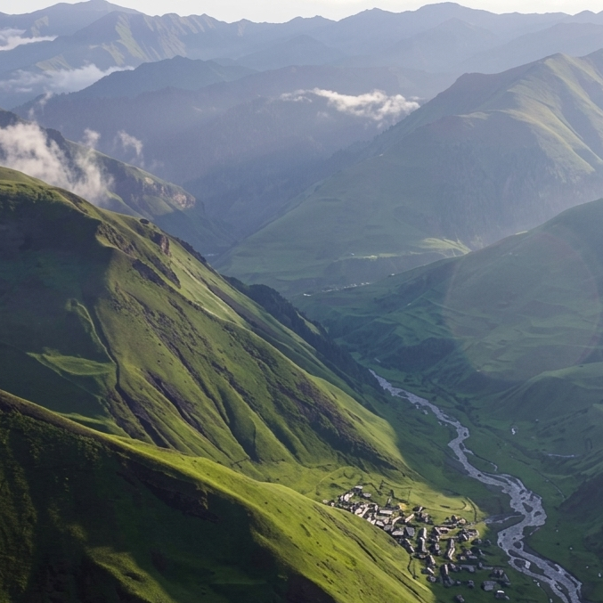
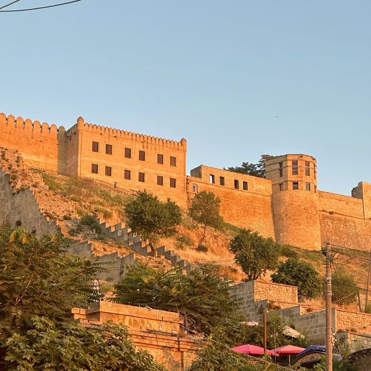
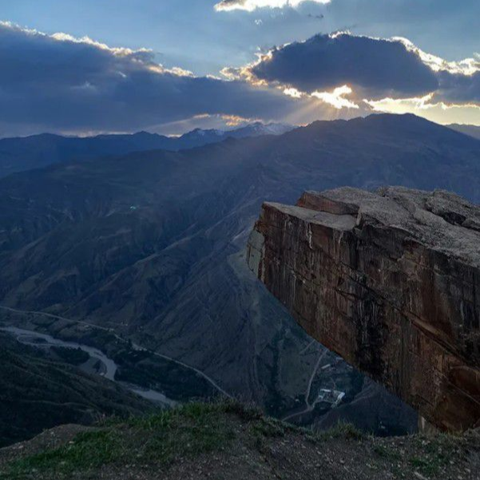
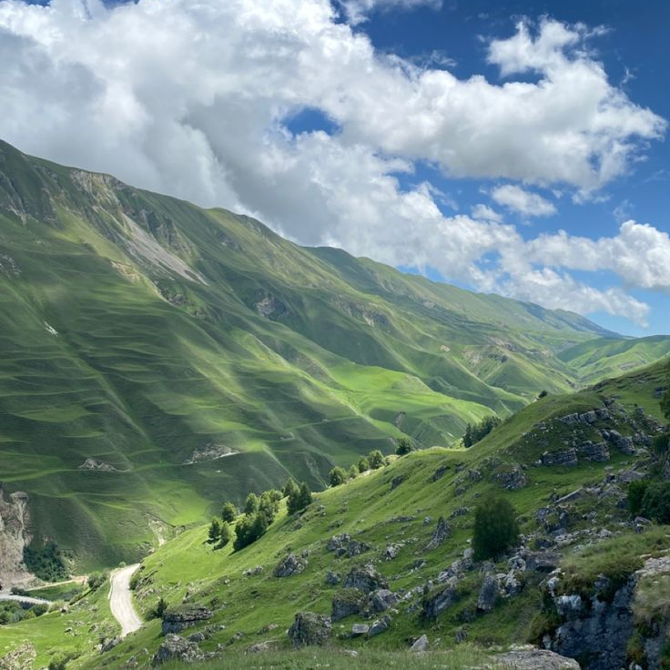
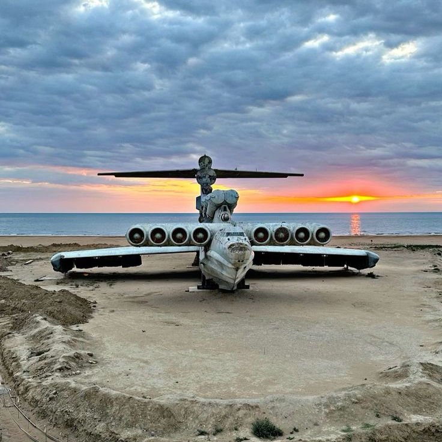
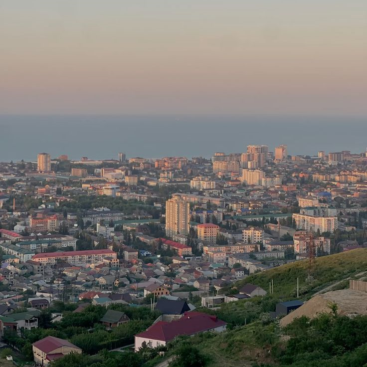

авторские поездки
красивый
ДАГЕСТАН
Горы, море, древние города и маршруты, которые запоминаются надолго.
почему выбирают нас
SnovaVtur — это не просто туры

Путешествия, где всё продумано
От экстремальных высот Сулакского каньона до уютных вечеров у горного очага — мы превращаем отдых в историю.
Дагестан — это место, где природа не просит разрешения, чтобы поразить вас своей мощью. Здесь каждый утренний туман над ущельем, каждый вкус горного меда и каждый взгляд на бесконечные хребты становятся частью вашей личной истории.
Мы не перегружаем маршрут и не гоним по локациям ради галочки. Вместо этого вы получаете комфорт, красивые точки для фото и атмосферу, в которую хочется вернуться. Ваша история на вершинах Кавказа начинается здесь.


наши маршруты
туры и экскурсии по Дагестану
Выберите формат отдыха: многодневные туры для глубокого знакомства с регионом или короткие экскурсии для ярких впечатлений за один день.

5 дневный классический тур
Идеальный маршрут для первого знакомства с Дагестаном. Никакой спешки — только самые яркие локации в комфортном темпе. Подойдет всем, кто ценит отдых с душой и без лишней суеты
от 45 000p
за человека

Экспесс-тур в Дагестан
Дагестан за выходные: концентрированный экспресс-тур для тех, кто ценит время. Увидите ключевые локации региона и полностью восстановите силы всего за 3 дня, не теряя рабочую неделю
от 30 000p
за человека

Горы и море, 7 дней
Горные панорамы и морской бриз в одной поездке. Насыщенная программа по знаковым местам региона с комфортными ночевками в горах и у моря. Увидите всё самое важное и оставите время на личный отдых и безмятежность на пляже
от 50 000p
за человека

Молодёжный тур
Идеальный формат для компании единомышленников от 18 до 35 лет. В программе: захватывающий каньон, адреналиновый рафтинг, уютные вечерние игры и песни у костра
от 60 000p
за человека

Дербент и экраноплан Лунь
1 ДЕНЬ. Мы увидим легендарный экраноплан, ставший символом ушедшей эпохи, и перенесемся в самое сердце истории — цитадель Нарын-Кала, чьи камни помнят дыхание древних цивилизаций
от 4 000p
за человека

Гоор и Язык Тролля
1 ДЕНЬ. Места, где захватывает дух: прогуляйтесь по легендарному уступу над бездной, оцените неприступное величие древних башен Гоора и прикоснитесь к мистике заброшенных аулов Кахиба, застывших во времени
от 4 500p
за человека

Самурский лес и Хучнинский водопад
1 ДЕНЬ. Погрузитесь в единственные в России субтропики Самурского леса, исследуйте мистические стены крепости и зарядитесь энергией у живописного Хучнинского водопада. Уникальный маршрут по самым зеленым и скрытым уголкам Дагестана.
от 5 500p
за человека

Сулакский каньон и бархан Сарыкум
1 ДЕНЬ. Увидьте самый глубокий каньон Европы, промчитесь по бирюзовой воде на катерах, прогуляйтесь по пустыне Сарыкум и попробуйте ту самую знаменитую форель на углях. Квинтэссенция самых ярких впечатлений региона
от 4 300p
за человека

Хунзах, Матлас и водопады
1 ДЕНЬ. Уникальное сочетание природной мощи и эстетики: масштабные водопады, загадочные лабиринты Каменной чаши и «поэтические» виды Хунзахского плато. Маршрут для тех, кто ищет истинную красоту и величие гор
от 4 000p
за человека

Экскурсия по Махачкале
1 ДЕНЬ. Почувствуйте ритм столицы: от захватывающих дух видов с плато Тарки-Тау до изящества белоснежных мечетей. Прогуляемся по знаковым музеям и пройдемся по тихим старым кварталам, чтобы увидеть настоящую, нетуристическую сторону дагестанского гостеприимства
от 3 500p
за человека
О турах SnovaVtur
SnovaVtur воплощает стремление показать Дагестан через призму комфорта и современной эстетики. Главная цель — дать путешественникам возможность по-настоящему прочувствовать атмосферу региона, а не просто ставить галочки в списке достопримечательностей. Каждый маршрут продумывается лично, сочетая величие кавказских гор, древнюю историю аулов и колорит местной культуры, чтобы вы ощущали себя здесь дорогим гостем
Авторский подход исключает конвейерный туризм с бесконечной спешкой и шаблонами. Основной приоритет — качественные авторские локации, лучшие точки для панорамных фотографий и проверенные места для отдыха. Организация поездок, начиная от подбора транспорта и заканчивая выверенным таймингом, полностью ложится на меня, позволяя вам сфокусироваться на созерцании природы и получении ярких впечатлений.
Выбирая SnovaVtur, вы доверяете отдых человеку, знающему каждый поворот горных серпантинов. Дагестан открывается по-настоящему лишь тем, кто ценит его масштаб и спокойствие. С каждой поездкой вы будете узнавать республику с новой стороны, открывая скрытые жемчужины региона. Приглашаю отправиться в путь, чтобы вместе создать историю, которая останется с вами в самых теплых воспоминаниях
Популярные вопросы
Да, в Дагестане абсолютно безопасно для туристов. Республика активно развивается как туристический центр, и к гостям здесь относятся с традиционным кавказским радушием и гостеприимством. Главное правило — проявлять уважение к местным традициям, обычаям и культуре. Как и в любом другом месте, достаточно соблюдать элементарные нормы приличия, чтобы ваш отдых прошел комфортно.
Дагестан — республика с сильными традициями. В городах (Махачкала, Дербент) дресс-код достаточно свободный, но стоит избегать чрезмерно откровенных нарядов (мини-юбки, глубокое декольте, прозрачные ткани).
• Для женщин: при посещении мечетей и горных сел желательно иметь при себе легкий платок и одежду, закрывающую плечи и колени.
• Для мужчин: не рекомендуется ходить в общественных местах с обнаженным торсом или в очень коротких шортах.
Все зависит от цели вашей поездки.
• С мая по сентябрь — идеальное время для поездок в горы, трекинга и посещения знаковых мест, так как в горах устанавливается комфортная погода.
• Июнь – август — время для пляжного отдыха на Каспийском море.
• Весна и осень — лучшее время для экскурсионных туров, когда не слишком жарко и можно насладиться красивыми пейзажами без летнего зноя.
Даже если в Махачкале жарко, в горах погода очень переменчива. Обязательно возьмите с собой:
• Удобную закрытую обувь (кроссовки или треккинговые ботинки с хорошим протектором).
• Ветровку или легкую куртку (на высоте часто дуют ветра и бывают прохладные вечера).
• Головной убор и солнцезащитные очки.
В городах и популярных туристических локациях мобильная связь и интернет работают стабильно. Однако в глубоких горных районах и ущельях связь может пропадать или работать с перебоями. Рекомендуем заранее скачать офлайн-карты и предупредить близких о возможных перерывах в общении, если вы планируете уезжать далеко от цивилизации.
если у вас остались вопросы - позвоните или напишите нам
8 989 473 37 54